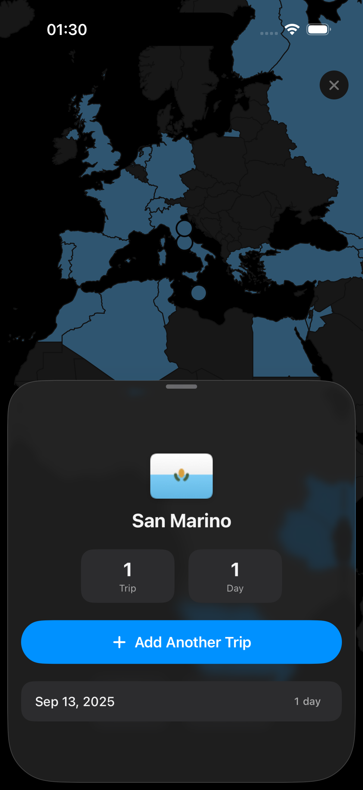

Schengen and rolling windows
Track rules like 90 in 180 without re-counting old entries every time you plan a trip.
AtlasDays keeps your trips, day totals, and key limits in one place. Track Schengen-style rules, 183-day thresholds, and long-term travel history without spreadsheet drift.


For visas, residency planning, and long-term travel records.
Track rules like 90 in 180 without re-counting old entries every time you plan a trip.
Watch 183-day style totals and custom targets before they quietly drift past your limit.
Keep a clean country-by-country record when you need past travel for forms or planning.
Clear records, clear totals, less manual counting.
Rolling windows, calendar-year limits, per-stay limits, and custom trackers.
Browse by country and year with ongoing trips and day totals visible immediately.
Tap a country, inspect totals, and move from overview to action fast.
Useful when older travel data is incomplete or reconstructed later.
Add trips quickly and keep the interface focused on what matters.
Your travel history stays yours, with on-device storage and optional iCloud sync.
Each stay carries its own day total, ongoing trips are obvious, and history remains readable year by year.
AtlasDays keeps your data on your device and can sync through your own iCloud if you choose. The goal is simple: help you count days without turning your movement history into someone else’s dataset.
Add trips, review totals, stay ahead of limits.
Log a country visit once and keep one clean record.
Check country history, day totals, and the trackers that matter.
Use clear counts before a limit turns into a problem.
Practical questions before you trust a travel-day tracker.
No. The product is designed around private travel-day tracking, not location surveillance.
Yes. AtlasDays is built for rolling-window visa counting and similar country or region limits.
Yes. AtlasDays is meant to work with real-world travel history, not only perfect records.
No. It helps you keep records and count days. Interpretation remains your responsibility.
Yes. All data is stored on your device. You don't need an internet connection to log or review trips.
Pricing will be announced closer to launch. There will be no ads and no hidden fees.
Not yet. AtlasDays is iPhone-only for now.
You can create separate trackers for different visa rules and nationalities, so yes.
Private travel-day tracking for visa limits, residency thresholds, and country history.